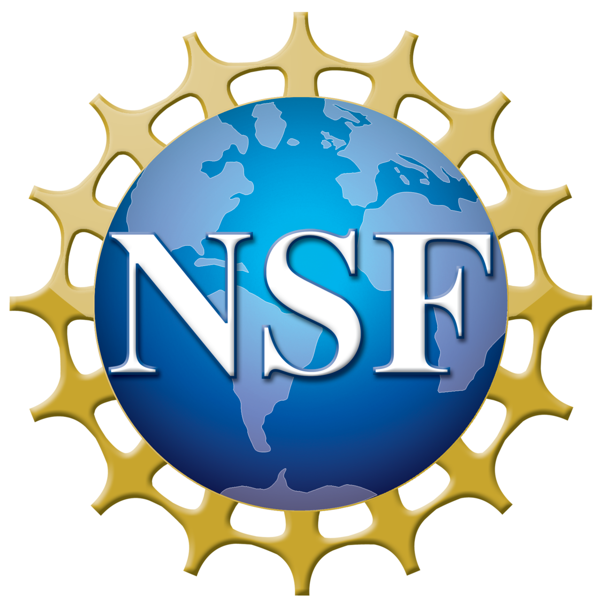

2022 - present
CUHK-Shenzhen Associate Professor, School of Data Science
Optimization · Machine Learning · Scientific Computing
Associate Professor and Assistant Dean, School of Data Science, The Chinese University of Hong Kong, Shenzhen
I work on optimization, machine learning, and scientific computing. My group develops algorithms that are mathematically principled, computationally efficient, and useful for modern data-driven science.
Students who enjoy rigorous mathematical thinking, algorithm design, and careful computational experiments will find many opportunities to grow here.
About
Ming Yan is an Associate Professor and Assistant Dean in the School of Data Science at The Chinese University of Hong Kong, Shenzhen. His research connects optimization theory, machine learning, and scientific computing, with applications to large-scale data, inverse problems, distributed learning, and AI-driven scientific discovery.
He received his B.S. and M.S. degrees from the University of Science and Technology of China in 2005 and 2008, and his Ph.D. in Mathematics from the University of California, Los Angeles in 2012. Before joining CUHK-Shenzhen in 2022, he was a faculty member at Michigan State University.
CUHK-Shenzhen Associate Professor, School of Data Science
Michigan State University Assistant Professor, then Associate Professor, CMSE and Mathematics
UCLA Ph.D. in Mathematics; advisor: Professor Luminita A. Vese
USTC B.S. and M.S. in Mathematics
Research
My group studies algorithms at the intersection of optimization, machine learning, and scientific computing. We care about both proof and performance: why an algorithm works, how fast it works, and what new problems it enables people to solve.
We design centralized and decentralized methods for large-scale learning over networks, with an emphasis on communication-efficient and computation-efficient algorithms. Topics include gradient tracking, compressed communication, directed network topologies, and federated or decentralized training.
We develop optimization perspectives, model architectures, and regularization tools for physics-informed neural networks. The goal is to make neural methods more accurate, stable, and efficient for differential equations and scientific simulation.
We study splitting methods for structured convex and nonconvex optimization, including PD3O and related primal-dual frameworks. These methods are useful in imaging, inverse problems, signal processing, and distributed learning.
We work on sparse modeling, nonconvex regularization, robust PCA, low-rank recovery, image reconstruction, denoising, and compressive sensing. These problems connect optimization theory with concrete computational tools.
We are interested in using machine learning, deep networks, and reinforcement learning to design adaptive algorithms and efficient solvers for mathematical, optimization, and inverse problems.
PINNC. Si and M. Yan, Initialization-enhanced physics-informed neural network with domain decomposition (IDPINN), Journal of Computational Physics, 530, 113914.
DistributedZ. Song, L. Shi, S. Pu, and M. Yan, Provably accelerated decentralized gradient method over unbalanced directed graphs, SIAM Journal on Optimization, 34, 1131-1156.
DistributedZ. Song, L. Shi, S. Pu, and M. Yan, Optimal gradient tracking for decentralized optimization, Mathematical Programming, 207, 1-53.
DistributedX. Liu, Y. Li, R. Wang, J. Tang, and M. Yan, Linear convergent decentralized optimization with compression, ICLR 2021.
SparseJ. Liu, M. Yan, and T. Zeng, Surface-aware blind image deblurring, IEEE Transactions on Pattern Analysis and Machine Intelligence, 43, 1041-1055.
DistributedZ. Li, W. Shi, and M. Yan, A decentralized proximal-gradient method with network independent step-sizes and separated convergence rates, IEEE Transactions on Signal Processing, 67, 4494-4506. (Code)
Primal-DualM. Yan, A new primal-dual algorithm for minimizing the sum of three functions with a linear operator, Journal of Scientific Computing, 76, 1698-1717. (Code)
DistributedZ. Peng, Y. Xu, M. Yan, and W. Yin, ARock: An algorithmic framework for asynchronous parallel coordinate updates, SIAM Journal on Scientific Computing, 38, A2851-A2879.
SparseM. Yan, Restoration of images corrupted by impulse noise and mixed Gaussian impulse noise using blind inpainting, SIAM Journal on Imaging Sciences, 6, 1227-1245.
People
Teaching
Join Us
We welcome students and researchers who are excited by mathematics, computation, and real scientific problems. A good fit is someone who likes to ask precise questions, build algorithms, test ideas carefully, and learn across disciplines.
Applicants should have strong preparation in mathematics, computer science, data science, or related areas. Experience with programming and independent projects is valuable, but curiosity, persistence, and clear thinking matter just as much.
Please email with the subject line PhD Application - [Your Name] and include a CV, transcript, brief research statement, and publications or project reports if available.
Applicants with expertise in optimization, machine learning, numerical analysis, scientific computing, or related fields are encouraged to contact me. Please include a CV, two representative papers, and a short research statement describing future plans.
Students who want to explore optimization, machine learning, and scientific computing before graduate study are welcome to inquire. Please send a short CV, transcript, proposed research period, and topic of interest.
Acknowledgments
Research support includes the National Natural Science Foundation of China, Department of Science and Technology of Guangdong Province, Shenzhen Science and Technology Innovation Commission, the U.S. National Science Foundation, Ford Motor Company, and Meta.

优化 · 机器学习 · 科学计算
香港中文大学（深圳）数据科学学院副教授、副院长
我的研究方向包括优化、机器学习和科学计算。课题组致力于发展兼具数学理论、计算效率和实际应用价值的算法，并服务于现代数据驱动科学问题。
如果你喜欢严谨的数学思考、算法设计以及细致的计算实验，这里会有许多值得探索和成长的研究机会。
简介
严明现任香港中文大学（深圳）数据科学学院副教授、副院长。研究方向连接优化理论、机器学习与科学计算，应用场景包括大规模数据、反问题、分布式学习以及 AI 驱动的科学发现。
他于 2005 年和 2008 年在中国科学技术大学获得学士和硕士学位，2012 年在加州大学洛杉矶分校获得数学博士学位。2022 年加入香港中文大学（深圳）之前，他曾任教于密歇根州立大学。
香港中文大学（深圳） 数据科学学院副教授
密歇根州立大学 计算数学、科学与工程系及数学系助理教授、副教授
加州大学洛杉矶分校 数学博士；导师：Luminita A. Vese 教授
中国科学技术大学 数学学士、数学硕士
研究
课题组研究优化、机器学习与科学计算交叉领域中的算法问题。我们同时关注理论与性能：算法为什么有效、运行效率如何、以及它能帮助我们解决哪些新的科学与工程问题。
我们研究面向大规模网络学习的集中式与去中心化优化方法，重点关注通信高效和计算高效的算法设计。相关主题包括梯度跟踪、压缩通信、有向网络拓扑，以及联邦或去中心化训练。
我们从优化角度研究物理信息神经网络，发展新的模型结构和正则化工具，希望提升其在微分方程和科学模拟中的精度、稳定性与训练效率。
我们研究结构化凸与非凸优化中的分裂方法，包括 PD3O 算法以及相关原始-对偶框架。这类方法可应用于成像、反问题、信号处理和分布式学习。
我们研究稀疏建模、非凸正则化、鲁棒 PCA、低秩恢复、图像重建、去噪和压缩感知等问题。这些方向将优化理论与实际计算工具紧密联系起来。
我们关注如何利用机器学习、深度网络和强化学习来设计自适应算法，并为数学、优化和反问题构建高效求解器。
PINNC. Si and M. Yan, Initialization-enhanced physics-informed neural network with domain decomposition (IDPINN), Journal of Computational Physics, 530, 113914.
DistributedZ. Song, L. Shi, S. Pu, and M. Yan, Provably accelerated decentralized gradient method over unbalanced directed graphs, SIAM Journal on Optimization, 34, 1131-1156.
DistributedZ. Song, L. Shi, S. Pu, and M. Yan, Optimal gradient tracking for decentralized optimization, Mathematical Programming, 207, 1-53.
DistributedX. Liu, Y. Li, R. Wang, J. Tang, and M. Yan, Linear convergent decentralized optimization with compression, ICLR 2021.
SparseJ. Liu, M. Yan, and T. Zeng, Surface-aware blind image deblurring, IEEE Transactions on Pattern Analysis and Machine Intelligence, 43, 1041-1055.
DistributedZ. Li, W. Shi, and M. Yan, A decentralized proximal-gradient method with network independent step-sizes and separated convergence rates, IEEE Transactions on Signal Processing, 67, 4494-4506. (Code)
Primal-DualM. Yan, A new primal-dual algorithm for minimizing the sum of three functions with a linear operator, Journal of Scientific Computing, 76, 1698-1717. (Code)
DistributedZ. Peng, Y. Xu, M. Yan, and W. Yin, ARock: An algorithmic framework for asynchronous parallel coordinate updates, SIAM Journal on Scientific Computing, 38, A2851-A2879.
SparseM. Yan, Restoration of images corrupted by impulse noise and mixed Gaussian impulse noise using blind inpainting, SIAM Journal on Imaging Sciences, 6, 1227-1245.
团队
教学
加入课题组
我们欢迎对数学、计算和真实科学问题充满兴趣的学生与研究者。适合这里的人通常喜欢提出清晰的问题、构建算法、认真检验想法，并愿意跨学科学习。
申请者应具有数学、计算机科学、数据科学或相关领域的扎实基础。编程经验和独立项目经历很有帮助，但好奇心、坚持和清晰思考同样重要。
请以邮件主题 PhD Application - [Your Name] 联系，并附上简历、成绩单、简要研究兴趣陈述，以及已有论文或项目报告（如有）。
欢迎优化、机器学习、数值分析、科学计算或相关方向的申请者联系。请提供简历、两篇代表作，以及简要研究计划。
希望在研究生阶段前探索优化、机器学习与科学计算的学生也欢迎咨询。请发送简历、成绩单、拟访问时间和感兴趣的研究主题。
致谢
研究工作得到国家自然科学基金、广东省科学技术厅、深圳市科技创新委员会、美国国家科学基金会、Ford Motor Company 和 Meta 等支持。